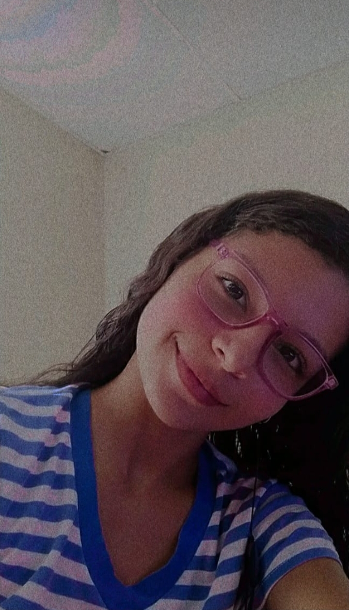
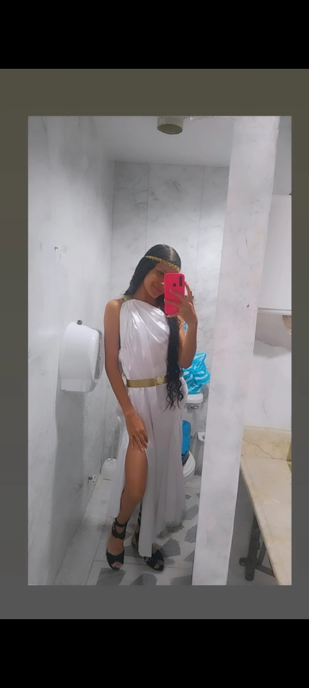
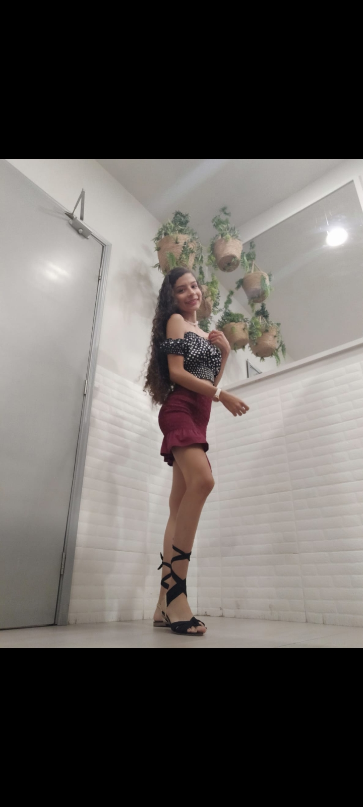

Sip, hace un año que estamos compartiendo vidas, un año donde nos hemos conocido mucho...
ha sido el mejor por mucho en lo que llevo devida.
Un año muy a tipico si de relaciones se habla, pues hemos pasado gran parte de nuestra relacion a distacia...
y no lo voy a negar a sido muy complicado, tambien hay que decir que los pocos meses que hemos estados juntos han sido complicados
pero que si embargo los hemos disfrutado de maneras insospechables.
Bueno... Que les digo, este video fue el primer video que el amor de mi vida me envio (sin pedirlo)
desde aca se puede decir que las cosas cambiaron, o qizas no?.
La cosa es que cuando vi el video por primera vez fue increible la
la sensacion, fue algo simplemente magnifico
Es que es hermosa
Lo nuestro es algo curioso la verdad, hemos pasado por muchos problemas banstante graves y aun asi hemos resistido a todo.
Por nombrar algunos ejemplos son: peleas, discuciones, desacuerdos, distacias, etc.

Cosas muy normales en relaciones... no?. Lo mas importante en toda relacion es la comunicacion y eso es algo que nos sobra no por nada llevamos
poco mas de un año y pocos meses hablando a diario todo el dia, entoces es algo literal nos sobra
Otra de la cosas super importantes en una relacion en la confianza y no es para menos, pues para que tener una relacion si no hay confianza?,
la cosa es que aparte de la comunicacion que tenemos tambien nos tenemos demaciada confianza y pues que les digo... es increible (ser celoso es importante ok?)
no estoy diciendo que nuestra relacion sea perfecta es que no hay relaciones perfecta, pero si es una relacion con buenas bases
desde alli es un buen punto de partida y desde luego hay mas esperansas de una relacion que dure años.
Obvio hemos tenido a lo largo de la relacion hemos tenido pequeños detallesque siempre son bien resividos.
soy fanatico a morir de mi novia, fanatico de su belleza, de su forma de ser, de hablar... simplemente fanatico de ella
 Solo tengo palabras de agradecimiento por este año de noviasgo y espero de todo corazon que sea solo el inicio de una gran historia